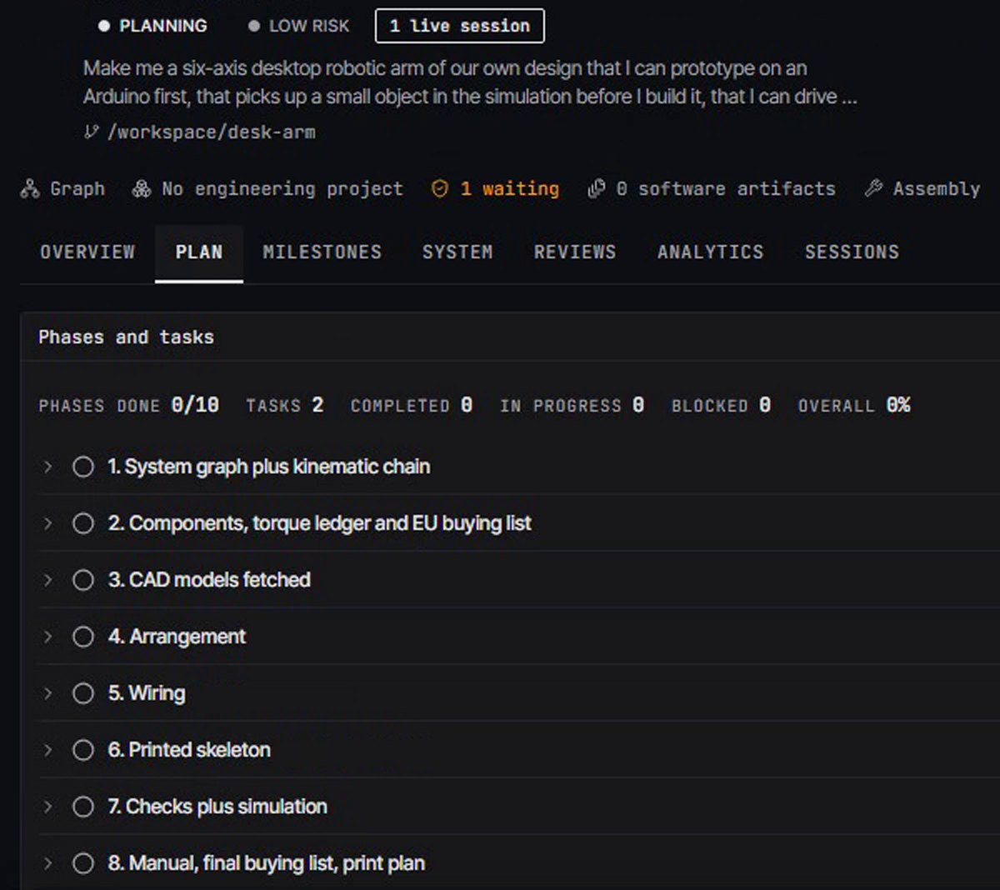
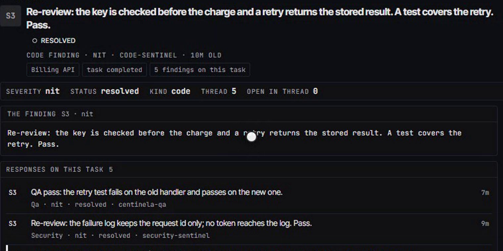
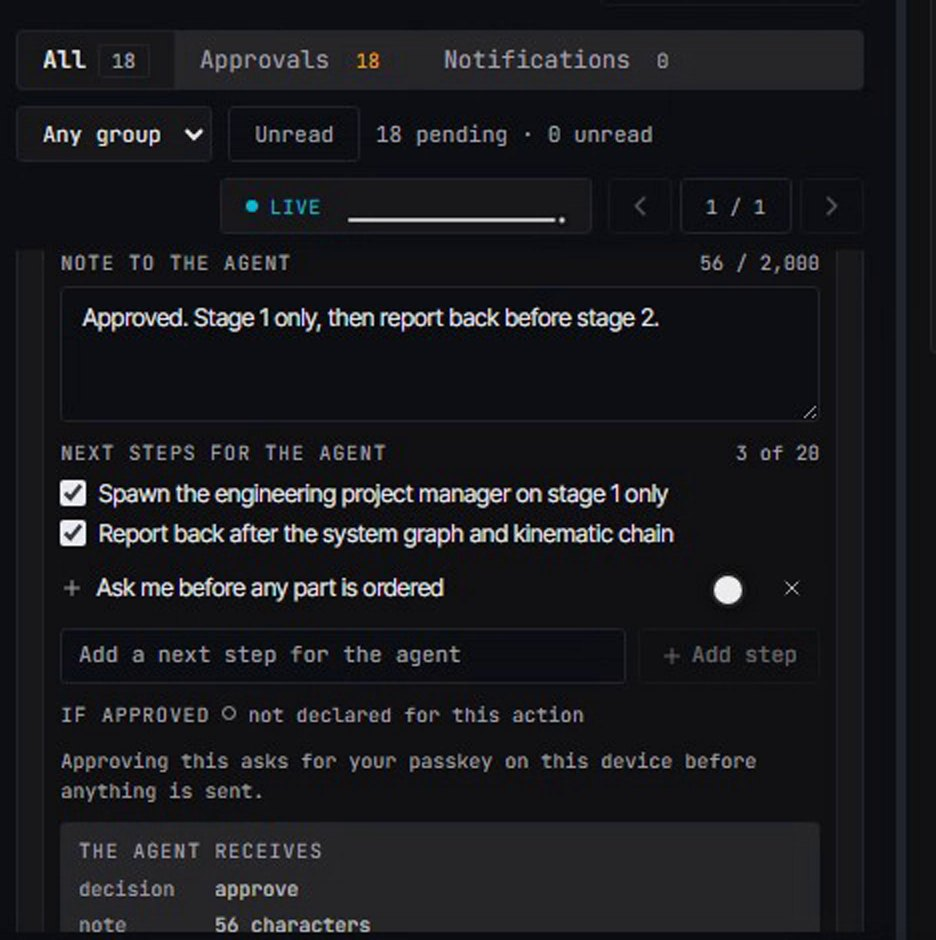
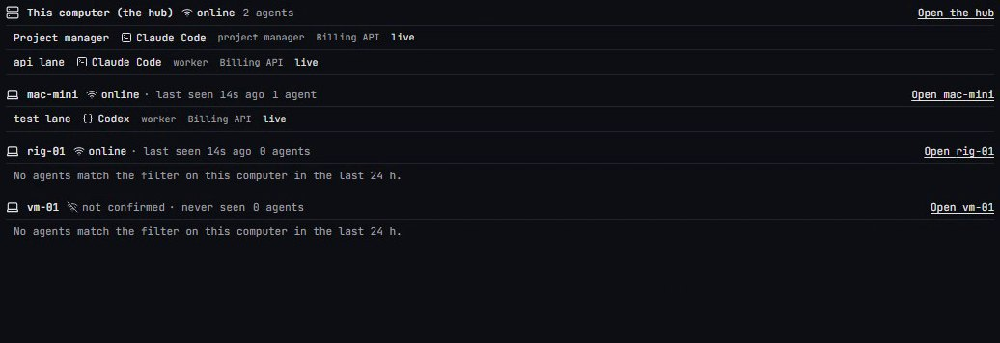
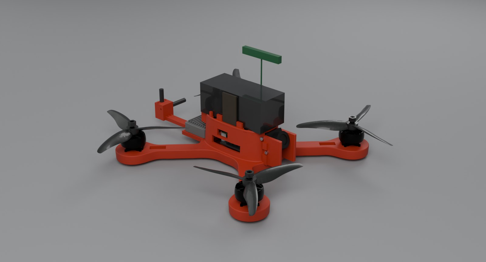

Open source · Apache-2.0 · pre-1.0
Say it once.
Watch it become a team.
Describe a goal, review a plan, and follow coding agents in their terminals. Print, flash and desktop-action paths ask for approval; their tested scope is on the Proof page.
A film of the app at work is planned: one continuous take, start to finish. Until it is made, each section below shows a recording or a drawing, labelled with what it is.
How it goes
Say what you want.
Theioma staffs it. You approve.
Three steps from a goal to a team at work. Approval coverage and its limits are recorded on the Proof page.
01
Say it.
By voice or by text. For software, the master orchestrator interviews you until the goal is specific enough to plan.
Add passkey sign-in to the billing API.
You, in your own words
02
It staffs the team.
A project manager turns the goal into tasks, and each task gets its own agent, on a harness and a computer that can run it.
- Master orchestrator
- Project manager
- api laneClaude Codetest laneCodexdocs laneClaude Code
03
You approve, and watch.
Follow agent sessions on screen. Supported physical and desktop actions file an approval with their evidence.
Waits for you
Run the migration on the billing database?
ApproveDeny
Illustrative: the sentence, the lanes and the question are examples of what each step shows.
From a sentence to who is doing itWhat it does
Everything one person needs
to run a team of agents.
- #1 Connect Manage your agents and computer connections from one place. Claude CodeOpenAI Codex CLIOpenClawAny agent behind HTTPCursor agent CLI Network / Computers
- #2 Route Browse models, inspect routing decisions and review recorded usage. Your subscriptionsAPI providersLocal, on Ollama Routing, on the Atlas
- #3 Talk Brief it the way you would brief an engineer. It hears you stop, and speaks its answer back. Silero VADfaster-whisperParakeetKokoro Voice
- #4 Learn Past work is recalled into each new session, and a method worth repeating becomes a skill you keep. Recall before workFeedback captureSkills as files Memory & learning
- #5 Build J-PEX carries a hardware brief through 8 rooms; a stage is granted only by a check that ran. LaboratoryCircuit LabCAD StudioPCB WorkshopFirmware IDESim BayDocs CenterFab Bay Build Lab
- #6 Steer Review supported approval requests and respond in your own words. From a deskPhone-sized previewIn your own words Approvals
Voice
Say it.
The sphere answers.
Brief Theioma the way you would brief an engineer. It hears you stop, writes down what you said, picks a model tier, and speaks its answer back.
StatusSpeak a brief and hear the answer. A 6 Sep 2026 test with synthetic audio measured an 8.2 s spoken turn on an RTX 5080.Proof
- Silero VADhears you stop
- faster-whisperspeech to text
- Silence gapends your turn
- Routerpicks a model tier
- The modelanswers
- Kokorospeaks back
The app’s own sphere, live in this page.
Plan
One sentence in.
A plan you approve out.
The master orchestrator interviews you until the goal is specific. A project manager turns it into stages and tasks, each with the criteria that say it is done. Then the plan waits for your approval.
StatusThe interview and the plan run for software and for hardware, and the plan waits for your approval.Proof

One sentence becomes ten stages.
Recorded from the app · fixture data ·Agents
Every task gets its own agent,
in a real terminal.
Claude Code, Codex, or another harness in the harness table: each agent runs in its own terminal with its brief and its tools, and each harness says how far it has been verified. Who may start whom is a rule in the code, and a worker can never start anyone.
- 112 channel tools in every session
- 97 hardware tools, each with its voice twin
StatusClaude Code, Codex and Cursor have each run as an agent under a steward, in a real terminal; OpenClaw and any HTTP agent have passed a probe; opencode, Gemini CLI and Aider are rows not verified yet.Proof
Who may start whom, as the code rules it.
Bring your own agents and models.
Each coding agent is a row in one harness table; the rows are read from the code when this page is built.
Every harnessAgents
- Claude Code
- OpenAI Codex CLI
- OpenClaw
- Any agent behind HTTP
- opencode
- Cursor agent CLI
- Gemini CLI
- Aider
Models
- SubscriptionsClaude and Codex sessions run on your own logins, never through a shared key.
- API providersThrough the model gateway, which hands each session its own token.
- LocalOllama on your own computer, found when the app starts.
Sentinels
Checked twice
before it is done.
After every code task a code sentinel, then a security sentinel, reports pass or fail. A fail goes back to the worker with its feedback, up to three times, and only a pass closes the task.
- 84 review records on file, to
- 62 of them findings
StatusThe review chain runs on the hub, and its verdicts are on record.Proof

A finding, its fix, the re-review.
Recorded from the app · fixture data ·Approvals
Review requests.
Stay in control.
Review supported approval requests and answer in your own words. The mobile preview shows the phone-sized flow.
StatusPrints, flashes and desktop clicks file an approval and wait, and above low risk an approval asks for your passkey. Phone pairing and the phone’s approval routes are built; an approval answered on a physical phone is not yet proven.Proof

Your decision, in your own words.
Recorded from the app · fixture data ·Network / Computers
Every computer you own,
one team.
A desktop with a GPU, a laptop, a cloud VM: each enrols with its own key and dials out to your hub. Every task is leased to one computer at a time, and when you revoke a computer its work moves on.
- A heartbeat from every session, every30 s
channel/src/index.ts - Silence reads as stale after90 s
session-liveness/constants.ts - A revoked computer dropped from the channel458 ms
06-two-node-proof.txt, three node processes on one computer
StatusDevice keys, the account CA, mutual TLS 1.3, leases and revocation. The receipts were measured with three node processes on one computer.Proof

Every computer, and the agents on it.
Recorded from the app · fixture data ·Limits
Plan for limits.
See the handoff paths.
Follow the paths for handing off a full context window and trying another member serving the same model.
StatusA full context window hands off to a fresh session, and a usage limit moves the turn to another member serving the same model. Both are tested; neither has passed a live drill yet.Proof
A full context window
- Agent A workson its task, in its own terminal
- Near its limitit reports the boundary and writes its handoff
- Agent B continuesfrom PROGRESS.md and the receipts
The old transcript is never resumed.
A usage limit
- A member hits its limita subscription or a provider says stop
- The gateway cools it downand looks for the same model elsewhere
- The next member answersserving the same model
If none serves that model, the turn is not delivered; it never moves to another model family.
Two limits, and the route each one takes.
Build Lab
Hardware,
room by room.
J-PEX carries a hardware brief through 8 rooms, each owned by a steward: requirements, parts, CAD, circuit, firmware, simulation, documents, fabrication. A stage is granted only by a check that ran, never by an agent saying so.
- 97 hardware tools, the same from a terminal or by voice
- One brief for a drone went through every room
- Drone v2 is under way, built by the product’s own stewards: its state on 17 Oct is below
StatusEvery stage up to the print gate has run on a real project, and a print waits for your approval.Proof

The racing quad, drawn from its own STEP files.
Drone v2, as it stands on 17 October 2026
partlyStage 1 · system graph
The machine as one graph, checked against its records
44nodes
- Connections94
- Wire · mechanical · thermal · bus44 · 32 · 17 · 1
It first closed on 14 Oct with 39 nodes and 85 connections, 17 of 17 records matching. It closed again on 17 Oct after the video changed, and the operator’s scope cut that afternoon re-opened it.
the project’s PM filesin progressStage 2 · component research
A full buying list, over the budget
EUR 854.32sourced
- The ceilingEUR 450
- Over it byEUR 404.32
- With import estimatesEUR 914.60
- Costs still unknown7
Research ran 6 rounds; the last one’s 23 of 23 receipts are current and 53 sources are kept on file. Nothing is bought. On 17 Oct the operator kept EUR 450 and asked for a cut scope with no live video, so the list is being priced again. The stage cannot close until its research check passes.
the project’s PM filesno run yetNot started
CAD, circuits, firmware, a print, a flight
Not started
Stage 3 has not started. Nothing has been printed, flashed or flown, and there is no all-up weight yet (a partial sum of board and part masses reads 407.2 g). The drone is not finished.
the project’s PM filespartlyThe chain
The product staffed the work itself
- Room stewards an engineering PM spawned, 13 Oct11
- Workers under the Laboratory steward, 13 to 17 Oct19
Not clean yet: stage 2 research was issued 7 times and assessed 6 times, and stewards and workers churned instead of the stage closing.
17-GAP-REGISTER
Memory & learning
It remembers,
and it learns.
Before an agent starts, Theioma recalls similar past work into its session. What agents find is filed with where it came from, and a method worth repeating becomes a skill: a file you keep.
StatusPast work is recalled into new sessions, and feedback and outcomes are logged. The nightly passes run and record each step, and none has yet applied an edit live; the monthly fine-tune is a dry run that trains nothing.Proof
- runsRecall before workthe spawn primer brings analogous past work into a new session
- runsA memory agents searchfull text first, reranked by embeddings
- runsFeedback capturehow each run went, logged
- runsSkills as filesa method worth repeating becomes a SKILL.md you keep
- ran onceA local fine-tune, held to its own gateone adapter was trained on 1 Oct 2026, and its held-out gate refused it
- dry runThe monthly fine-tune jobit records the run, and trains and swaps nothing
- runsNightly consolidation and daily self-improvementeach night and each day a job records its steps; none has yet proposed and applied an edit live
What it keeps from every run.
Benchmarks
Measured, with its date.
Not measured, said plainly.
Each number is read from the file it was measured in when this page is built, and names that file. Where nothing has been measured yet, the card shows a hollow ring and what it waits on, never a zero.
Routing and models, read from the app
measuredRouting
Tokens for the price of Claude Opus 5.5
- Last 7 days0.91×
- Last 30 days1.06×
The tokens routing served for the list-price value it drew, against the tokens that value buys on Claude Opus 5.5 alone. Over the last 7 days routing served 18.0B tokens, where the same value buys 19.8B on Opus 5.5 alone: below one, because GPT-6-Astra lists above Opus 5.5. Over 30 days it served 35.2B against 33.4B on Opus 5.5 alone. This is list-price value, not money: most of the work runs on included subscriptions and free routes, a subscription call counts at its list-price equivalent and a free or local call at zero.
the scorecard, read from the app· Method and caveatmeasuredModels
Which catalogue models have been tried
17of 773 have data
Never tried: 72 have no tool support, 52 have no enabled connection, and 632 were never routed to. Most of the catalogue has not been tested yet.
the scorecard, read from the app
Voice
measuredSpeech model
First audio from the speech model, before and after its rewrite
p50 262.0153.6msp95 464.5304.1msBeforeAfter
Kokoro on the RTX 5080: 330 paired requests, two voices, in one process; the same length and the same word error rate as before. This dated run times the model alone, not a whole turn. The source now defaults to
fp32-matmul; it does not measure the running service.b-kokoro-speedmeasuredVoice turn
A whole spoken turn through the app, at its best
8.2s, on the RTX 5080
turn 23.18.2sOn the CPUOn the RTX 5080
Speech to text, the answer and its speech, through the app’s own routes. A turn under one second has not been measured on any path.
voice-e2e.md §8.1measuredVoice budget
Where a turn’s time goes, stage by stage, against a 300 ms target
- The end of your turn, decided 1,455 ms p95 1,508 ms · n 24 · its share 120 ms
- Speech to text, the final transcript 57 ms p95 88 ms · n 105 · its share 20 ms
- The local model’s first output 3,920 ms p95 6,263 ms · n 24 · its share 60 ms
- First audio of the first clause 180 ms p95 274 ms · n 24 · its share 60 ms
its share of the 300 ms target
Each stage timed on its own, on synthetic speech, as the app ships it. Not measured yet: the phone path’s transcript, the route before the model, playback start. The 300 ms is the operator’s target for first audio, not a measurement.
voice-latency budget.md
Computers and learning
measuredComputers
A revoked computer, dropped from the channel
458ms
Its process exited with code 3 and the others kept working. Three node processes on one computer, not two machines.
06-two-node-proof.txtmeasuredComputers
A spawn sent to one computer, there and back
141ms
It ran on that computer only. The same proof, on the same one computer.
06-two-node-proof.txtran onceLearning
A local fine-tune, held to its evaluation gate
- The base model309 of 319
- With the adapter310 of 319
Held-out answers right, one task class, Qwen3-4B. A gain of 0.0031 against a gate of 0.02, so the swap refused the adapter and nothing is served from it.
d2-train-serve
Not measured yet
not enough dataCost
What routing through the cost cascade changes
Not enough data yet
6 sessions ran on a model the router chose; a claim needs 30.
no run yetSpeed
Time to a done task, against one plain session
No run yet
One controlled bench measures it; a real run waits for the operator’s go-ahead.
no run yetCorrectness
Right first time, by hidden acceptance tests
No run yet
The same bench; the tests decide, not the agent.
Tests and proof
Tests run, with their results.
Proof, with its receipt.
The test suite, the type check and the lint as last filed in the repository, the ship list as it stands, and every run end to end. Each carries its date and its file, and a failure is counted, not hidden.
no recent runVitest
The whole test suite
Historical evidence unavailable
The historical raw test receipts are unavailable. Total, pass counts and the local database comparison are unknown; no suite pass is claimed.
Historical lane notes· notes are not verification of missing raw receiptsin progressShip list
What v1.0 must meet
2of 25 met
- R1
- R2
- R3
- R4
- A1
- A2
- A3
- B1
- B2
- B3
- C1
- C2
- C3
- C4
- C5
- C6
- D1
- D2
- D3
- E1
- E2
- E3
- X1
- X2
- X3
Read from the ship program’s registry when this page was built: 305 work lanes, 104 of them committed or done.
00-SHIPPABLE.mdnot green yetType check
TypeScript, the whole app
10errors in 7 files
As read at 11:52 on , the last whole-app read filed in the repository. Their fixes are in the tree; later reads are not filed here yet.
r-tsc-greenpartlyLint
ESLint
- passEvery package
- no resultThe app, typed
The app’s typed lint ran out of memory before it finished. A run in smaller pieces has not finished yet.
r-lint-greenno recent runCI
Continuous integration on master
3 Sep 2026
The last run on a push to master, and those runs were cancelled. No CI pass is claimed here.
r-ci-healthmeasuredAt the published commit
Tests the repository keeps
- 7,770TypeScript and JavaScript test files
- 339Python test files
- 267Playwright end-to-end specs
A count of files, not a pass rate. The end-to-end specs run in batches, and no single all-green run of them exists to cite yet.
commit
c7730dd40, counted bygit ls-tree
Run end to end.
One brief or one project at a time, through the real app, every request logged. Each report names what it proved and what it did not.
Every run, with its report- A hardware interview, through the product31 requirement rows filed and the plan approved. Its hand-off to the engineering project manager has not run.
c-int-live-proof - Many computers, three node processes on one computer3 device keys; mutual TLS, leases and a revocation; the revoked process exited and the rest kept working.
06-two-node-proof.txt - A robotic arm, through the same rooms224 logged calls; its report left two approvals for the operator.
2026-09-07-arm-e2e.md - One drone brief, through every room144 logged calls; every id a row the run wrote.
2026-09-06-drone-e2e.md - A software project, through every page106 logged round trips: created, planned, worked, refused with a reason, read back.
2026-09-06-software-e2e.md
What Theioma does.
Each area below has its own page: what it does, how it works, and the receipts behind it.
Area by area- Many computers
- Agents
- Models
- Phone approvals
- Voice and desktop
- Learning
- J-PEX hardware
- Packaging
FAQ
Questions,
answered plainly.
Does Theioma replace Claude Code, Codex or OpenClaw?
No. They are the agents. Theioma spawns them into real terminals, gives them their briefs and tools, connects them to each other, and shows you everything they do.
Can I run it across several computers?
As a preview. Each computer you own enrols with its own key, receives a certificate from your account’s authority, and takes work leased to it over mutual TLS, with leases and revocation. The receipts were measured with three node processes on one computer; two physical computers come after v1.0. The steps are in how a computer joins.
Do I need a GPU?
No. Subscriptions and API providers carry the work without one. Local models and speech can use a GPU. A 6 Sep 2026 test with synthetic audio measured an 8.2 s spoken turn on an RTX 5080 and 23.1 s on the CPU; these are historical timings, not current-service performance. A local fine-tune uses it; the monthly fine-tune job is a dry run today and trains nothing. A computer with a GPU reports its memory and temperature to the hub.
What does it cost to run?
Theioma uses the subscriptions, API keys, free tiers and local models you connect. A usage ledger shows spend and subscription use per agent, project and computer.
Where does my code go?
It stays on your computers and in your own Git repository. What an agent sends to its model provider goes to that provider; with a local model on Ollama, it stays on your computer.
Is there an installer?
Not a published one. Theioma runs from source on Windows, and the desktop shell builds unsigned Windows installers from the same source. This site offers no download button.
What does “fixture” mean on this page?
A fixture recording is the real app in a real browser on an isolated test server, over rows made for that take and deleted after it: not a live session, and nothing in it was sent to a real agent. A live recording is the running app on real data. Every recording here says which it is, and when it was made.
Get started
Run it
from source.
These commands start the web app on one Windows computer. They took a clean checkout to a running app on 1 Oct 2026, and have not been re-run on the current tree. A second computer joins with the node agent, as a preview. No installer is published, so this page has no download button.
- Windows, Git, Node.js 20.18 or later but below 23, npm 9 or later, and Docker with its engine runningneeds
README, You need - The quick start these commands come fromREADME
README, Quick start
# source is private during pre-release; access on request node scripts/setup/doctor.mjs # read-only: names each missing piece and its fix npm ci node scripts/setup/bootstrap.mjs # database container, apps/web/.env.local, schema, seed npm run build -w @theioma/latent-mesh # once, before the first agent session cd apps/web && node server.mjs